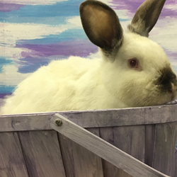

Ethical
MoonRaven Rabbitry strives to uphold the most ethical standards when it comes to the care, breeding and sale of rabbits within our rabbitry. We run a small rescue for pet-only rabbits that need a new home, whether temporary or permanently. We work hard to make the lives of our furry friends enjoyable and live as close to natural living as possible.
Educational
MoonRaven Rabbitry works with anyone interested in raising rabbits, no matter the reason, to educate them to the best of our abilities. We cover breeding, raising kits, routine care, handling. and much more. We recognize that everyone views rabbits differently whether pets or as livestock and do not seek to impress our own personal feelings pertaining to livestock rabbits on others, but rather we wish to educated and inspire others to uphold the most ethical and humane standards when it comes to rabbits.
Eco-Friendly
Rabbit waste makes a wonderful fertilizer. We offer compost as well as rabbit waste as a more natural and eco-friendly method of fertilizing lawns and garden beds. As our rabbits are not given any growth hormones, unnecessary antibiotics, or unhealthy foods, the outcome of using their waste as a natural fertilizer is amazing.
Bun of the Month
This month our Bun of the Month is Frith. Frith is a Checkered Giant, American Chinchilla, New Zealand mix. She is a wonderful mother to not only her own kits, but also those she fosters. Frith is named after the Sun in the Watership Down books written by the late Richard Adams.
Bun of the Month
This month our Bun of the Month is Frith. Frith is a Checkered Giant, American Chinchilla, New Zealand mix. She is a wonderful mother to not only her own kits, but also those she fosters. Frith is named after the Sun in the Watership Down books written by the late Richard Adams.